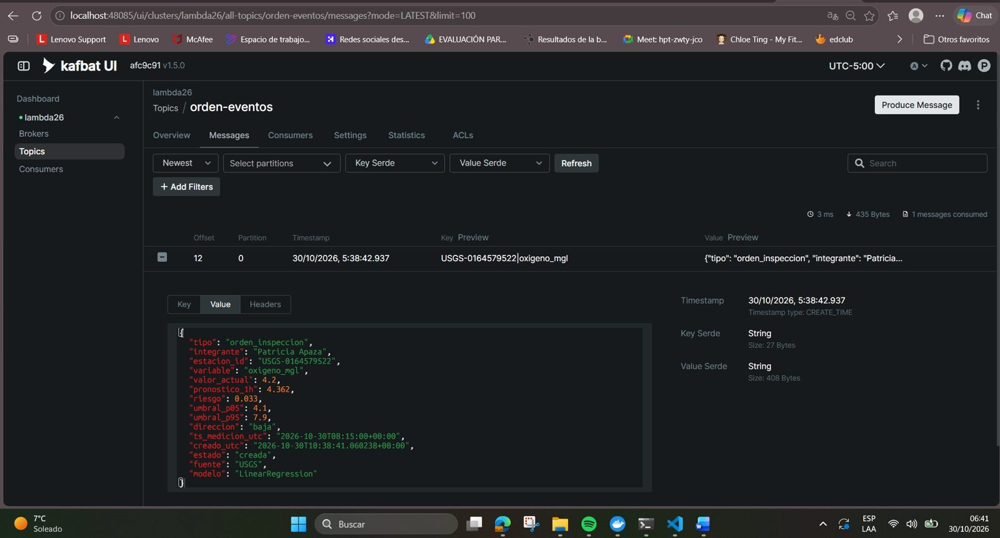
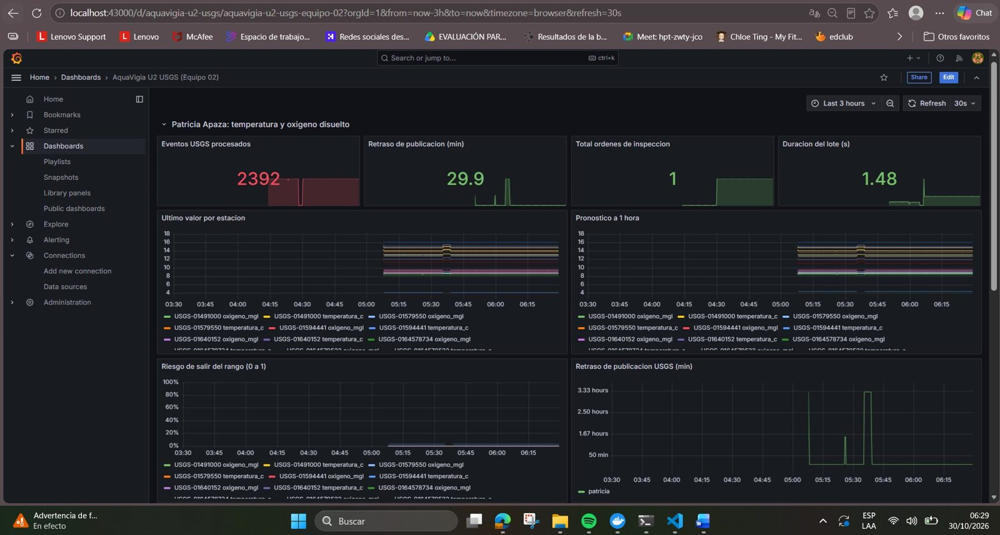

Big Data: Producto de Unidad 2: AquaVigía (dimensión U2 de Patricia Apaza)¶
Equipo 02 · Proyecto Sello AquaVigía · Big Data (Curso 262) · UPeU
Pipeline en tiempo real de AquaVigía con datos reales de sensores del USGS (EE. UU.): ingesta con Kafka, procesamiento con Spark Structured Streaming (ventana, watermark y checkpoint), observabilidad con Prometheus y Grafana, estimación de costos, y un modelo de series de tiempo cuyo pronóstico y riesgo se ven en el mismo tablero.
Mi dimensión: temperatura (temperatura_c) y oxígeno disuelto (oxigeno_mgl). Mi evento de negocio es la orden de inspección (orden_inspeccion, tópico orden-eventos). Todas las cifras salen de mis propias corridas del 30-oct-2026; donde algo es una limitación o una hipótesis, está dicho.
0. Qué cambió entre S6 a S11 y S12, y qué es real¶
| Flujo | Sesiones S6 a S11 | Integración S12 (esta entrega) |
|---|---|---|
| Evento empresarial | Microservicios ec-orden-ms y ec-pago-ms (orden-eventos, pago-eventos) |
Orden de inspección generada por el modelo en orden-eventos (misma infraestructura Kafka) |
| IoT / sensores | ESP32 físico (sensor táctil) y un productor sintético de plomo | Sensores reales de calidad de agua del USGS, por su API pública, en agua-usgs-eventos |
| Modelo | Plomo, entrenado con el Gold de S04 y probado con lecturas sintéticas | Temperatura y oxígeno a 1 hora, entrenados con 90 días de historial real del USGS y aplicados al flujo real |
Contexto: en S7 declaré que no conseguía un sensor de calidad de agua, y el hallazgo de S11 (sección 8) mostró que un modelo entrenado con datos reales rendía peor sobre un flujo sintético. En S12 el entrenamiento y el flujo salen de la misma fuente real. No repetí la auditoría de error en producción sobre el flujo USGS, así que no afirmo que ese sesgo haya desaparecido, solo que ya no hay una fuente sintética en el medio.
Los sensores del USGS no son dispositivos propios: son estaciones reales de monitoreo (Maryland y Virginia) leídas por una API pública. El docente aceptó la fuente externa de forma verbal. Los datos son reales; el despliegue y el procesamiento son míos.
1. Arquitectura (Lambda)¶
USGS (sensores reales, API publica)
| historial 90 dias (usgs_productor.py historial) --> data/historial.jsonl (capa batch: entrenamiento)
| lecturas nuevas cada 120 s (usgs_productor.py publicar)
v
Kafka: agua-usgs-eventos (1 particion, key = estacion_id)
v
Spark Structured Streaming (agua-pyspark)
ventana 15 min + watermark 85 min + checkpoint
PipelineModel (pronostico a 1 hora) -> riesgo de salir del rango
| | |
v v v
Parquet (artifacts) Kafka: orden-eventos (orden_inspeccion) Pushgateway :49091
|
kafka-exporter --> Prometheus :49090 <------- scrape ---------+
|
Grafana :43000 (tablero unico "AquaVigia U2 USGS (Equipo 02)")
Servicios: lambda26-kafka, lambda26-kafka-exporter, lambda26-kafka-ui (:48085), agua-pyspark (Jupyter :4488, Spark UI :4042), lambda26-pushgateway, lambda26-prometheus y lambda26-grafana.
Capa batch: historial de 90 días (1 309 777 lecturas en total, 646 003 de mis dos variables). Capa de velocidad: lecturas nuevas a Kafka y Spark. Capa de servicio: Grafana.
2. Alcance por sesión¶
| Sesión | Capacidad | Mi evidencia |
|---|---|---|
| S6 | Ingesta empresarial | ec-orden-ms pública orden.creada y orden.cancelada; ec-pago-ms consume y pública pago.aprobado/rechazado. Con el consumer apagado LAG=4; al reactivarlo LAG=0 (informe S06). |
| S7 | Ingesta IoT | ESP32 real con puente MQTT a Kafka y validación de esquema y rango (informe S07). En S12 la fuente pasa al USGS (sección 3). |
| S8 | Streaming Spark | En S8, ventana de 10 s con watermark de 10 s sobre el ESP32 (informe S08). En S12, ventana de 15 min y watermark de 85 min medido sobre el USGS (sección 4). |
| S9 | Observabilidad y costos | Dashboard de 4 paneles y costos con precios de referencia (informe S09). En S12, tablero con métricas del flujo USGS y costos con el volumen real (sección 5). |
| S10 | Series de tiempo | Modelo de plomo con corte cronológico (informe S10). En S12, temperatura y oxígeno a 1 hora (sección 6). |
| S11 | BI/ML distribuido | KPIs y prediccion en Grafana (informe S11). En S12, el mismo tablero muestra último valor, pronóstico y riesgo (sección 6). |
| S12 | Pipeline integrado | Este documento, los cuadernos 12a, 12b y 12c y el tablero grafana_aquavigia_u2_usgs.json. |
3. Contratos de eventos¶

Evento de sensor (agua-usgs-eventos, 1 partición, key estacion_id, productor usgs_productor.py):
{ "evento_id": "2e26d2f2-3ffb-46f6-9867-4f98dc2c71f4", "estacion_id": "USGS-01491000",
"variable": "nitrato_mgl", "codigo_parametro": "99133", "valor": 1.59,
"fecha_medicion_utc": "2026-10-30T14:30:00+00:00",
"fecha_ingesta_utc": "2026-10-30T14:38:25.392387+00:00",
"retraso_min": 8.4, "origen": "vivo", "fuente": "USGS" }
(Mensaje real tomado de Kafka UI, offset 10788.) El tiempo del evento es fecha_medicion_utc (cuando midio el sensor), no la hora de llegada: es la base de la ventana y del watermark. origen distingue vivo, historial y reproduccion/replay (lecturas reenviadas para pruebas, declaradas). Variables del tópico: ph, oxígeno_mgl, turbidez_fnu, temperatura_c, conductividad_uscm y nitrato_mgl, en 12 estaciones (66 series estación por variable).
Evento de negocio (orden-eventos, 1 partición, key estacion_id|variable): una orden_inspeccion se emite cuando el riesgo pronosticado de salir del rango supera RIESGO_ALERTA, con enfriamiento de 60 minutos de tiempo de evento por estación y variable.
{ "tipo": "orden_inspeccion", "integrante": "Patricia Apaza",
"estacion_id": "USGS-0164579522", "variable": "oxigeno_mgl",
"valor_actual": "...", "pronostico_1h": "...", "riesgo": 0.033,
"umbral_p05": "...", "umbral_p95": "...", "direccion": "baja",
"ts_medicion_utc": "...", "creado_utc": "...",
"estado": "creada", "fuente": "USGS", "modelo": "LinearRegression" }
(Los campos umbral_* y las fechas dependen de la estación y de la corrida; el valor de la orden real está en Kafka UI, offset 12 de orden-eventos.) La direccion que preocupa es alta para temperatura y baja para oxígeno.
4. Procesamiento streaming (12a)¶
- Ingesta verificada: 6 072 mensajes en el tópico al momento de la corrida, 100 % válidos según el contrato, 2 323 eventos únicos (el resto son reenvíos de las pruebas).
- Retraso real y watermark: ventana limpia n=144, mediana 28, p90 56, p99 71 min. Incluyendo los cortes de red de la laptop (n=745) el p99 sube a 148. Watermark = max(60, redondeo a 5 de p99 por 1,2) = 85 minutos, calculado con la ventana limpia. Es una muestra pequeña.
- Sin watermark el estado crece: filas de salida por micro-lote en modo
complete: 405, 790, 798. - Con watermark y checkpoint: 4 micro-lotes (batchId 0 a 3). Al reiniciar con el mismo checkpoint el batchId continua en 4 (no vuelve a 0).
- Dato tardío: se reenvió una lectura de temperatura con 500 min de brecha frente a un watermark de 85. Con watermark su ventana no aparece (False); sin watermark si aparece (True).
- Salida persistente: 830 ventanas guardadas en Parquet con checkpoint.
5. Observabilidad y costos¶

- Métricas al Pushgateway (
job/u2_usgs/instance/patricia):usgs_eventos_total,usgs_lotes_total,usgs_alertas_total,usgs_retraso_min,usgs_duracion_lote_s,usgs_ultimo_valor,usgs_pronostico_1hyusgs_riesgo. Prometheus las recoge; verificado con la consultausgs_eventos_total{integrante="patricia"}= 2 392. - Tablero
grafana_aquavigia_u2_usgs.json: una fila por integrante con eventos procesados, retraso de publicacion, alertas, duración del lote, último valor, pronóstico a 1 hora y riesgo de salir del rango (con la línea de umbral). - Volumen real: 66 series, 322 bytes por evento, regimen estable de 19 008 eventos al día (6,12 MB/día, 0,183 GB/mes). La medición bruta del tópico (40 069 eventos/día) no se usa: incluye la carga inicial de 6 horas y lecturas reenviadas para pruebas.
- Costos y criterios de escalado: ver costos (servicio administrado frente a máquina propia, con enlaces; precios y límites verificados el 30-oct-2026).
6. Series de tiempo y BI/ML (12b y tablero)¶
Pronóstico a 1 hora (12 pasos de 5 min). Variables: valor actual, rezagos (1, 2, 3, 6 y 12 pasos), cambio de la última hora, el valor de la otra variable y hora del día (seno y coseno). Corte cronológico 80/20 en 2026-10-12 03:35 UTC (entrenamiento 245 273 filas, prueba 61 433). Se comparan dos referencias y dos modelos.
| Variable | Modelo | RMSE | MAE | R2 |
|---|---|---|---|---|
| temperatura_c | Repetir el último valor | 0.2365 | 0.1769 | 0.9935 |
| temperatura_c | Media de entrenamiento | 8.1750 | 7.6283 | -6.7360 |
| temperatura_c | LinearRegression | 0.1299 | 0.0957 | 0.9980 |
| temperatura_c | RandomForest | 1.7089 | 1.1656 | 0.6620 |
| oxígeno_mgl | Repetir el último valor | 0.2096 | 0.1221 | 0.9757 |
| oxígeno_mgl | Media de entrenamiento | 2.1246 | 1.8296 | -1.4966 |
| oxígeno_mgl | LinearRegression | 0.1422 | 0.0964 | 0.9888 |
| oxígeno_mgl | RandomForest | 0.3928 | 0.2064 | 0.9147 |
Mejora del RMSE frente a repetir el último valor: temperatura +45,1 %, oxígeno +32,1 %. El MAE también mejora. RandomForest rindió peor que la regresión lineal; no verifiqué la causa.
Riesgo y evento de negocio (12c, modo reproducción): el riesgo es la probabilidad de salir del rango de advertencia de la estación (percentil 5 a 95 del entrenamiento), suponiendo error normal con la desviacion igual al RMSE. Con el umbral de operación (0,5) no hubo ninguna orden: el riesgo máximo fue 0,0309 (USGS-0164579522, oxígeno). Para poder mostrar un evento en la demo usé un umbral de 0,01, con el que se emitió 1 orden (46 pronósticos en 3 lotes, 2 392 eventos). Lo declaro: es un umbral de demostracion, no de operación.
7. Limitaciones conocidas¶
- El USGS mide cada 5 minutos pero publica por tandas con retraso. El watermark de 85 minutos sale de una ventana limpia pequeña (unos 140 eventos); con los cortes de red de la laptop el p99 sube. Es una medición corta, no una caracterización definitiva.
- Las pruebas de reinicio y de dato tardío reenvían lecturas reales duplicadas al tópico para generar trabajo. Se declaran como pruebas; por eso hay más mensajes que eventos únicos.
- Las órdenes o alertas se publican solo en Kafka; no se conectaron a ningún servicio de negocio posterior.
- El modelo se valida con una sola partición cronológica de unas 2,5 semanas (80/20), no con validación repetida. Los umbrales de advertencia son estadísticos (percentiles 5 y 95 del entrenamiento de cada estación), no una norma de calidad del agua.
- Las pruebas corren en una sola laptop compartida; el cuaderno 12c se ejecutó en modo
reproduccion(lee lo ya guardado del tópico), por esots_medicion_utcde un evento puede ser horas anterior acreado_utc. - Los precios de COSTOS se verificaron en las páginas oficiales el 30-oct-2026 y pueden cambiar después; el costo se calcula con el volumen de todo el tópico (6 variables) y la opción de máquina propia no incluye disco ni transferencia.
- La clave de la API del USGS se usa solo como variable de entorno y nunca se versióna.
8. Hallazgo previo (S11) que motivo la fuente real¶
En S11, el modelo de plomo tuvo un MAE de 0.0905 sobre el flujo sintético, contra 0.01547 en su prueba y 0.0042 de repetir el último valor. La causa probable (no verificada) era la diferencia entre los datos de entrenamiento y los del flujo. Ese informe sigue siendo mi evidencia de S11.
9. Reproducibilidad¶
- Docker con Kafka, Prometheus, Grafana, Pushgateway y el contenedor
agua-pysparkarriba (docker ps). Verifica enhttp://localhost:49090/targetsque los targets estén UP. - Crear a mano los tópicos (
AUTO_CREATE_TOPICS_ENABLE=false):agua-usgs-eventosyorden-eventos. - Clave gratuita del USGS (https://api.waterdata.usgs.gov/signup). Se pone solo como variable de entorno:
set USGS_API_KEY=...(CMD). - Historial de 90 días:
py usgs_productor.py historial --estaciones <lista> --dias 90 --variables temperatura_c,oxigeno_mgl,ph,turbidez_fnuy copiarhistorial.jsonlas12-u2-usgs/data/(no se sube a git: supera el límite de GitHub). - Tiempo real:
py usgs_productor.py publicar --estaciones <lista> --cada 120 --salida kafka --periodo PT3H. - En Jupyter (
http://localhost:4488), carpetas12-u2-usgs, correr en orden12a_streaming_usgs_patricia_v2,12b_modelo_usgs_patriciay12c_negocio_usgs_patricia_v2, celda por celda y con un solo kernel abierto. - Grafana (
http://localhost:43000): importargrafana_aquavigia_u2_usgs.jsoncon Prometheus como fuente.
10. Trazabilidad con la rúbrica¶
| Criterio | Dónde está la evidencia |
|---|---|
| 1. Ingesta empresarial | Sección 3 (contrato del evento de negocio) y cuaderno 12c, secciones 3 y 6 (lectura del tópico de negocio) |
| 2. Ingesta IoT | Secciones 0 y 3 (contrato USGS), cuaderno 12a, secciones 2 y 3 |
| 3. Streaming con Spark | Sección 4, cuaderno 12a, secciones 4.1 a 4.5 |
| 4. Observabilidad | Sección 5, cuaderno 12c (sección 4, métricas) y tablero AquaVigia U2 USGS |
| 5. Costos y escalado | Sección 5 y costos |
| 6. Salidas BI/ML | Sección 6 y tablero de Grafana (KPIs, último valor, pronóstico y riesgo en la misma pantalla) |
| 7. Series de tiempo validadas | Sección 6, cuaderno 12b |
| 8. Sustentación | Guion de demo y preguntas del jurado |